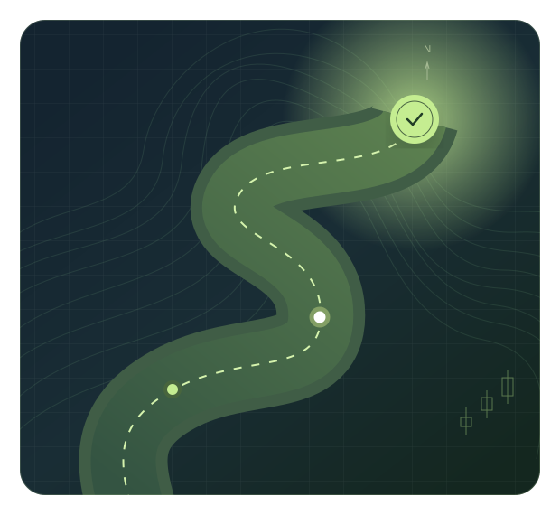

Read the bigger picture
Market direction, momentum, and the context behind the chart.
Navigate commodity options with a clearer plan. Discover the knowledge, perspective, and discipline to make more considered decisions.

Knowledge, freely sharedNo subscriptions. Just learning.
A focus on commoditiesOptions, futures, and the bigger picture.
Your pace. Your path.Build your understanding, step by step.
Practical lessons and original seminars. A wealth of knowledge, now a little easier to find.
A thoughtful process starts long before an order is placed. Follow a simple path from the fundamentals to putting your knowledge into practice.
Start with the fundamentalsBegin with the Get Going Seminar and the ideas behind Ken Roberts’ approach.
Learn about charts, retracements, and the role of options in a considered plan.
Explore paper trading, reflect on your decisions, and return to the lessons that matter.
Build a framework for the questions
that deserve your attention.
Market direction, momentum, and the context behind the chart.
Calls, puts, strike selection, expiration, and option pricing.
Risk and reward, position management, and defined entry and exit plans.
A process to return to when headlines, volatility, and emotions get loud.
“I created Options Road Map as a free resource to share the wealth of information from my mentor, Ken Roberts, who was gracious enough to permit me to share.”
This collection is dedicated to Ken and his teaching legacy. The materials are a historical archive, preserved to help curious learners explore commodity markets with greater structure and discipline.